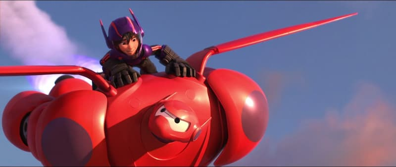

Hiro Hamada is a very high intellect individual who enjoys making new creations and pushing the limits of technology. He is very resourceful, thinks fast, and is very creative. Not only is he smart and able to make good rational decisions, but he is also caring and compassionate to those who he cares about. He makes descisions not only based off of his own wants or desirs, but he also makes them in the interest of those around him. He's also persistant in his goals. He's someone who does not give up easily especially if it is about those he cares about.
Click here to learn more about Hiro!Hiro Should run for president because he could help with creatively engineering solutions to problems while also having a genuine care for the wellbeing of the people around him. He would be a good president because he has experience in choosing the good over the easy, which is an important trait in a ruler because it shows that he's willing to go the extra mile for the good of the people, rather than going the easy, quick, and not as good way.
If Hiro and Baymax win they will find a way to craete more cloudy days on hot summer days! No more lack of shade in the 100 degree weather! Say hello to more clouds and less UV exposure!